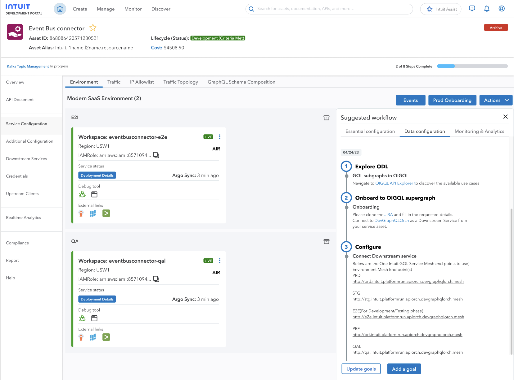
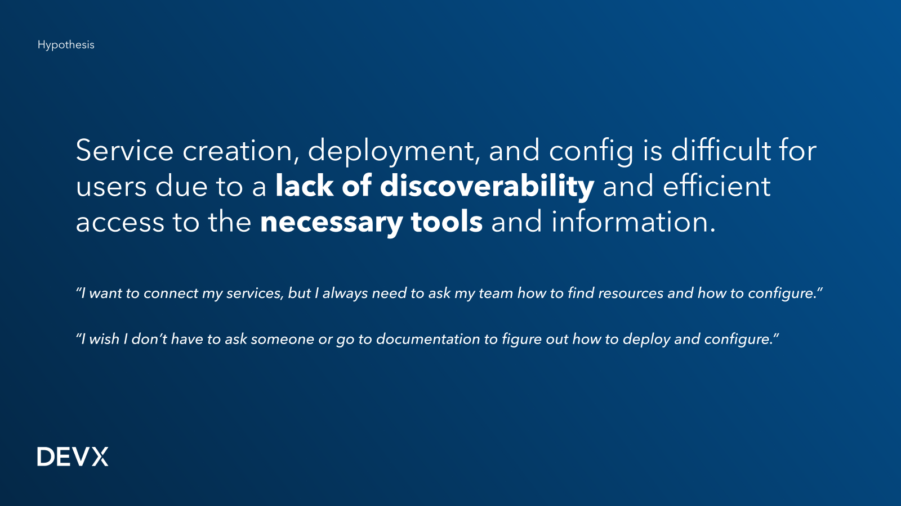
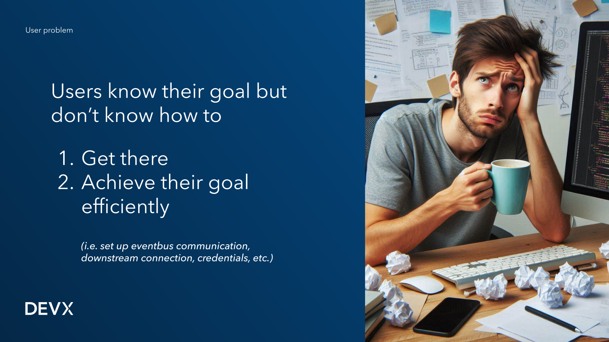
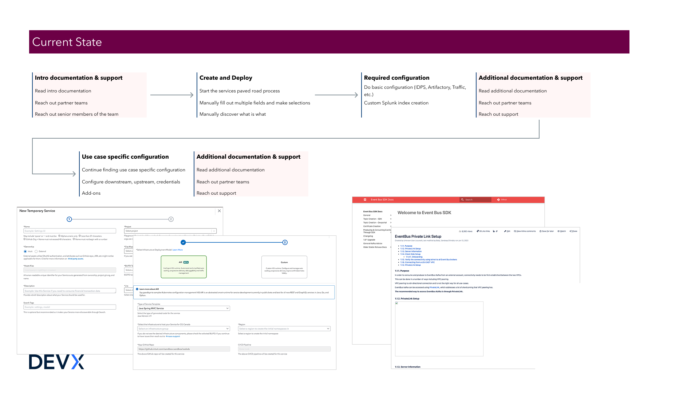
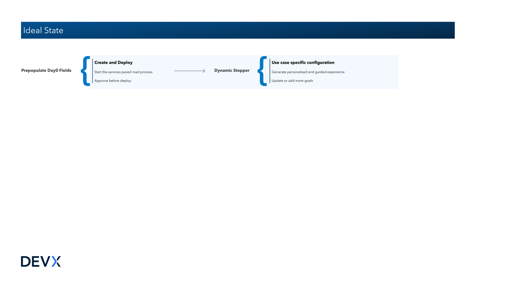
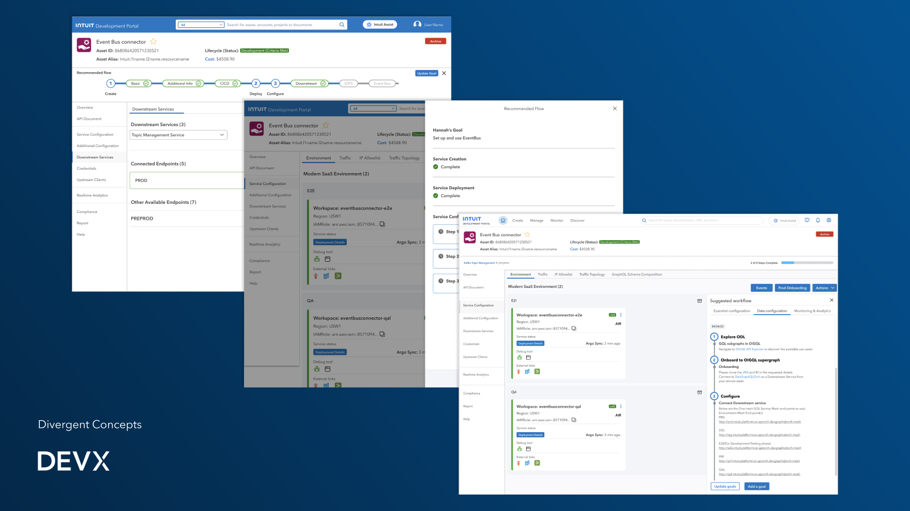
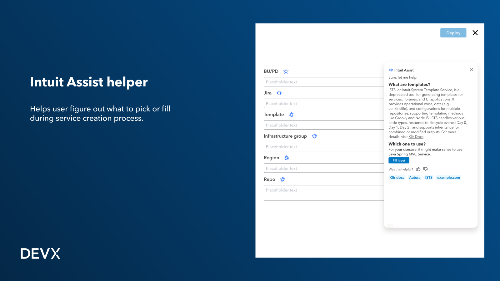
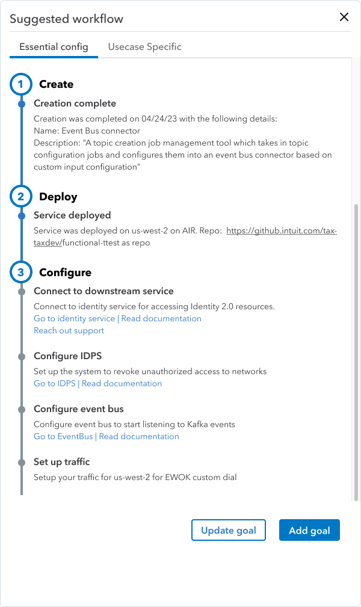
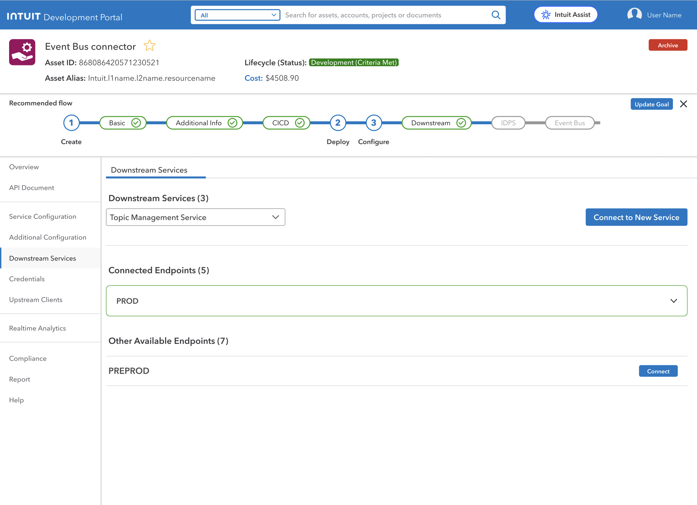

AI Paved-Path Service Creation
A guided, AI-assisted way for developers to create and configure new services — from a design-led bet with no product roadmap behind it, to a CTO-approved part of Intuit's FY26 strategy.

Backend infrastructure is usually divided into smaller pieces — code, APIs, databases — deployed independently, like LEGO blocks. Those blocks come together to build an entire application: TurboTax has one login lego, one payment lego, one tax-form lego, and so on. Knowing which blocks to snap together, and in what order, was almost entirely tribal knowledge.
Hypothesis: service creation, deployment, and configuration is difficult for users due to a lack of discoverability and efficient access to the necessary tools and information. Two lines from early interviews said it plainly: "I want to connect my services, but I always need to ask my team how to find resources and how to configure," and "I wish I don't have to ask someone or go to documentation to figure out how to deploy and configure."
The business case was velocity. Dev velocity was running about 30% under target, and velocity and PR-merge rate are the two clearest signals of whether engineering is actually hitting production targets — which flows straight through to revenue and how fast the org can innovate.

Boiled down, the problem had two halves: users knew their goal but didn't know how to 1) get there, and 2) achieve that goal efficiently — think setting up EventBus communication, a downstream connection, credentials, and the dozen other small decisions bundled inside "just create a service."

Mapping the current state showed a punishing loop: read intro documentation, reach out to partner teams, reach out to senior members just to get started — then manually fill out multiple fields to create and deploy, hit a wall of required configuration (IDPS, Artifactory, traffic, custom Splunk indexing), read more documentation, reach out again for use-case-specific configuration, then read and reach out a third time for anything left over.
One persona built from this research, Hannah, a Data Service Developer, made the shape of the problem concrete:
I'm trying to create, deploy, and configure a service for Kafka Topic Management so I can test service communication.
But I'm finding the end-to-end experiences or workflows confusing due to the high level of flexibility in the process,
because there is a lack of available data on the necessary vs. optional steps and user preferences for creating, deploying, and configuring services —
which makes me feel slow and clueless about what to do next in the development journey.
The ideal state collapsed that loop into two moves: prepopulate Day 0 fields so a developer can start the paved-road process and get an approval before deploy — then hand off to a dynamic stepper that generates a personalized, guided experience for whatever use-case-specific configuration is left, and lets a developer update or add goals as they go.


The first concept proposed a chat interface in place of a form-filling UI, paired with a guided experience for doing configuration. Presenting that demo to the GenAI Web Plugin development team and PM led to an exploration of a full chat assistant — but further testing showed an immersive chat panel wasn't the right shape for this task. The alternative that stuck was a micro-assist embedded directly in the creation flow: contextual help exactly where a developer was stuck, instead of a separate conversation to context-switch into.
A third round of demos, this time with the Intuit Kubernetes Services dev team, surfaced a gap the concept hadn't covered — developers often work multiple configuration goals at once — which led to adding a dedicated tab for managing and updating several goals in parallel. From there, the dynamic stepper got built out into a real "suggested workflow": Create and Deploy steps that resolve automatically and log what happened, followed by a Configure phase where each remaining task — connect downstream service, configure IDPS, configure event bus, set up traffic — carries its own one-click links out to the right tool or doc.



"Good job guys. I want you to show this at GED. Can you work with Avni to identify a developer to build this?" — Mukulika, Director of Product
Feedback from testing sessions shaped the final details as much as the earlier concept rounds did — confirmation the guided shape was right, plus the edge cases that made it real: "I appreciate the guided experience. Now I don't need to worry how to navigate through," one participant said, while another asked the question that led directly to the multi-goal tab: "What if the user has multiple goals?" A third wanted the assist panel to stay put rather than re-collapsing after every step, and a fourth asked whether a goal outside the suggested list could be added by hand — both of which became follow-up refinements.
That greenlight from Mukulika sent the concept to Global Engineering Days, Intuit's internal hackathon — where it generated enough interest from the developer community to justify more engineering demos. A round of concept testing across multiple teams surfaced edge cases, additional use cases, and constraints the earlier rounds had missed.
From there it was about tying the work to something bigger — a design workshop with the Horizons and Apex design groups connected the guided workflow to a broader platform experience, and more prototyping produced a real start-to-finish journey instead of a handful of disconnected screens. Contributing demos, the research deck, and the underlying thinking to a strategic paper turned all of it into a pitch a CTO could actually approve.

The project got CTO-level approval for FY26 strategic intake. Guided, AI-assisted service creation is now part of the actual product roadmap — not just a design team's side bet. The immediate next step: identify developers and PMs to collaborate on building a prototype or component, with the explicit goal of assessing its potential as a reusable pattern across other paved-road journeys, not just this one — with early talks already underway with the GenUX paved-roads team.